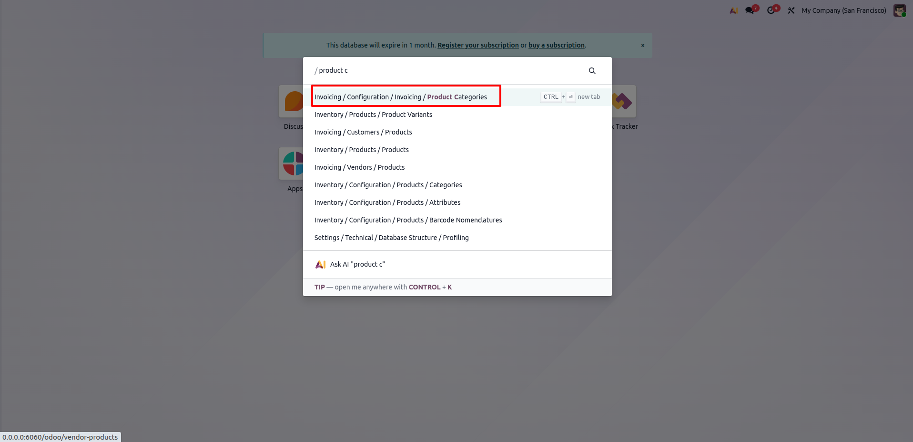
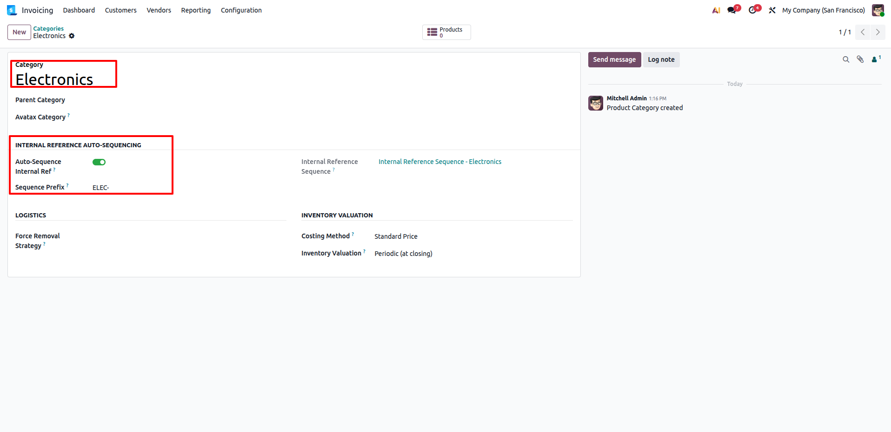
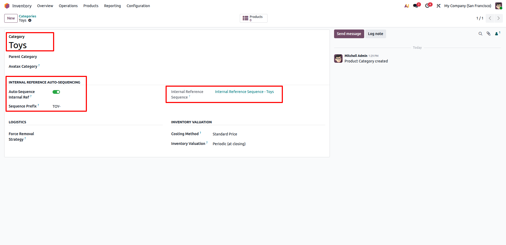
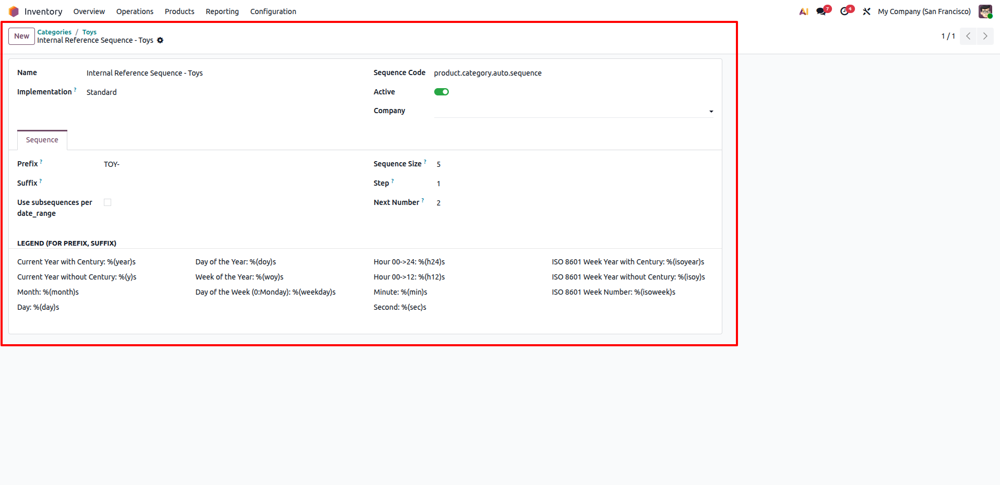
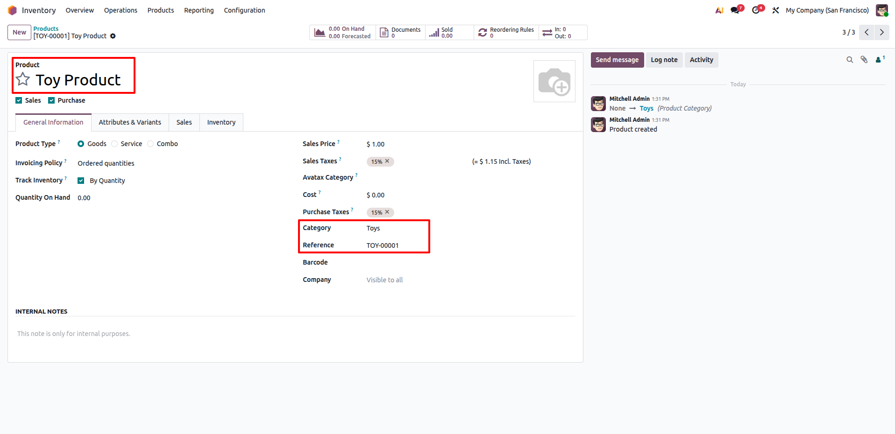
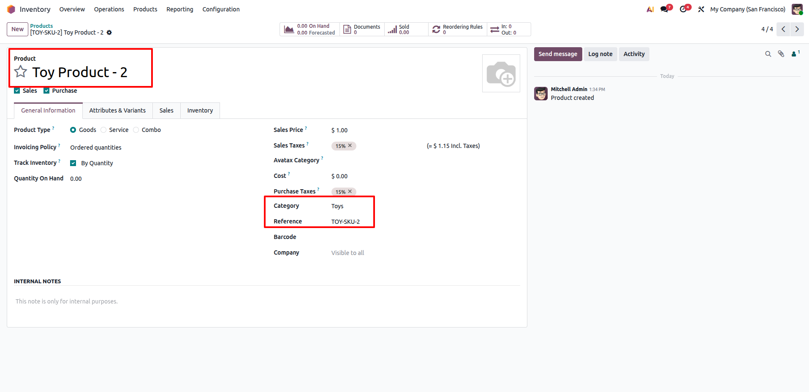
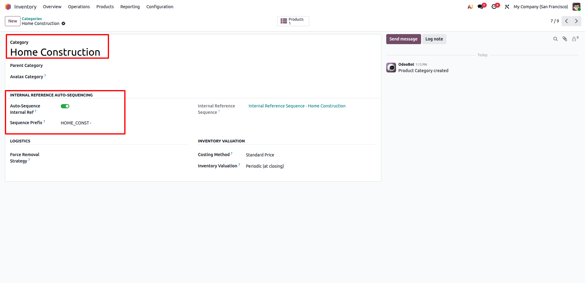
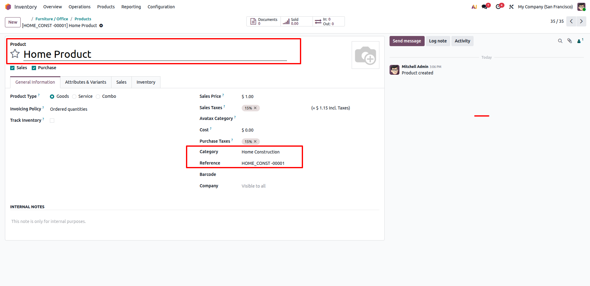

Category-Based Auto-Sequencing of Product Internal References
Incipient Enterprise SuiteCategory-Based Product Auto-Sequencing
Automate standardized internal reference (SKU / default_code) generation per product category with custom prefixes, dedicated sequences, and seamless re-categorization synchronization.
Need Setup Assistance?
Free pre-sales consultation and lifetime support for every installation.
Contact Technical SupportBuilt for Standardized Inventory Management
Eliminate human numbering errors and duplicate product SKUs across your catalog
Category Numbering
Dedicated SequencesEach category gets its own independent ir.sequence engine with custom prefixes (e.g., ELEC-, FOOD-, CHEM-).
Auto & Dynamic Sync
Creation & Re-CategoryAutomatically assigns internal references on creation and re-sequences products dynamically whenever their category changes.
Variant & Template
Seamless FlowSynchronizes references across templates and variants while preserving manual overrides whenever custom SKUs are needed.
The Business Transformation
How Category-Based Product Auto-Sequencing resolves standard Odoo product reference limitations
Default Odoo Limitation
- ✕ Users must manually type Internal References (SKU), leading to duplicates and inconsistencies.
- ✕ No category-specific sequence configuration or custom automated prefixes out-of-the-box.
- ✕ Moving a product to a different category leaves old obsolete SKUs unchanged, creating catalog confusion.
Automated Reference Intelligence
- ✓ Automated category-based sequence assigns unique, formatted codes on product creation.
- ✓ One-click sequence generator creates dedicated ir.sequence with customizable prefix and padding.
- ✓ Automatic re-sequencing on category reassignment keeps product references aligned with catalog structure.
Comprehensive Feature Suite
12 Core capabilities engineered for precision inventory catalog control
Category Auto-Sequence Toggle
Enable or disable auto-sequencing per product category directly from category form and list views using a clean boolean switch.
Custom Sequence Prefixes
Define custom category prefixes (e.g. ELEC-, FOOD-, CHEM-) or let Odoo auto-suggest from the category title.
One-Click Sequence Generation
Automatically creates an isolated, dedicated ir.sequence record with configurable padding and increments on save or via button.
Product Creation Automation
Generates and applies the next sequential reference code immediately upon creating any product under an active category.
Re-Categorization Sync
Changing a product's category instantly assigns a new code from the destination category's sequence engine automatically.
Variant-Level Synchronization
Ensures consistency between product templates and product variants while preserving individual variant overrides when needed.
Manual Override Flexibility
Explicitly provided internal references during import or manual entry are respected and never overwritten without request.
Informative UI Placeholders
Product form fields clearly show helpful placeholder tips explaining that codes are auto-assigned by the category.
Sales & Inventory Cross-App
Auto-generated references flow transparently into Inventory deliveries, Sales quotations, Purchase orders, and Invoices.
Multi-Company Support
Sequences function seamlessly across single or multi-company Odoo databases without colliding reference counters.
Edition Compatibility
100% compatible with Odoo Community Edition, Enterprise Edition, and Odoo.sh cloud deployments.
Zero External Dependencies
Built strictly with standard Odoo ORM methods with zero third-party dependencies or performance bottlenecks.
Step-by-Step Visual Walkthrough
How Category-Based Product Auto-Sequencing operates in Odoo
Access Product Categories Menu
Use the command palette or navigate to Invoicing → Configuration → Invoicing → Product Categories (or via Inventory → Configuration → Products → Categories).
Quickly locate and open your product categories list to configure auto-sequencing rules.

Configure Category Sequence (Electronics)
Open a category such as Electronics. Under the dedicated Internal Reference Auto-Sequencing group, enable the Auto-Sequence Internal Ref toggle.
Define a custom prefix like ELEC-. The system automatically creates and links the sequence: Internal Reference Sequence - Electronics.

Configure Second Category (Toys)
Open another category such as Toys and enable Auto-Sequence Internal Ref.
Set the sequence prefix to TOY-. An isolated sequence Internal Reference Sequence - Toys is automatically generated and linked.

Inspect & Fine-Tune Sequence Rules
Click into the generated sequence record to inspect sequence code (product.category.auto.sequence), prefix (TOY-), sequence size/padding (5), and next counter values.
Leverages standard Odoo ir.sequence flexibility with zero custom configuration overhead.

Automatic SKU Assignment on Product Creation
Create a new product like Toy Product under the Toys category and save.
The system automatically assigns the next sequence number (TOY-00001) to the Reference field without any manual typing.

Manual Reference Override Support
Create a second product, such as Toy Product - 2, and enter a custom internal reference (e.g. TOY-SKU-2).
The module respects user input and does not overwrite custom manual codes, ensuring maximum operational flexibility.

Category with Custom Prefix (Home Construction)
Set up another category, such as Home Construction, with sequence prefix HOME_CONST -.
Supports alphanumeric prefixes, dashes, underscores, and spacing to match your enterprise naming convention.

Independent Sequential Reference Generation
Create Home Product under Home Construction and save the product.
The product immediately receives reference HOME_CONST -00001, demonstrating perfectly isolated sequence tracking across different product categories.

Frequently Asked Questions
Click any question below to expand or collapse details